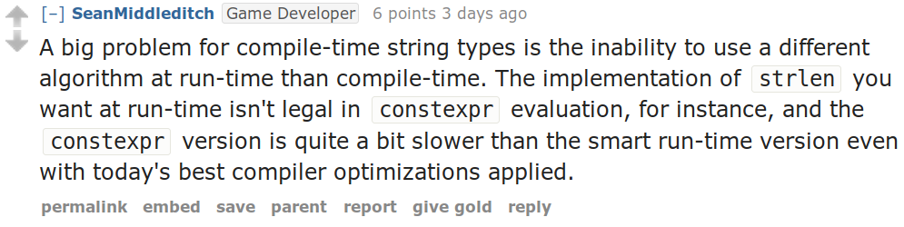
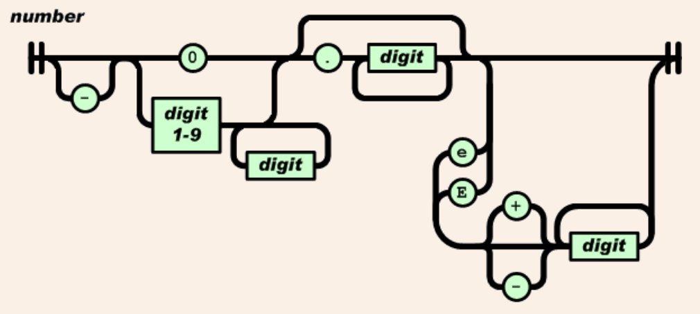
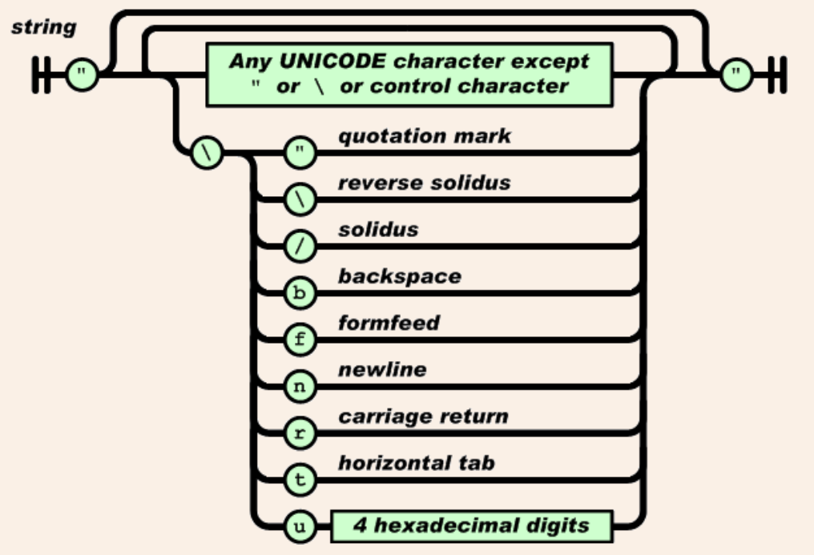
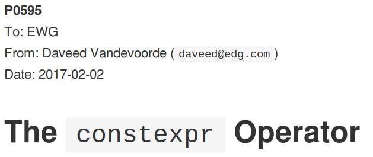
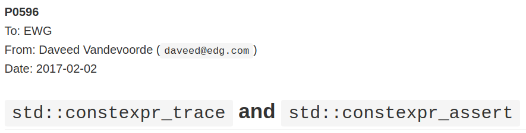
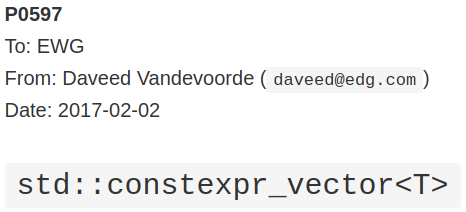

Ben Deane / bdeane@blizzard.com / @ben_deane
Jason Turner / jason@emptycrate.com / @lefticus
CppCon / Monday 25th September 2017
The Goal
We want to do this:
constexpr auto jsv = R"({ "feature-x-enabled": true, "value-of-y": 1729, "z-options": {"a": null, "b": "220 and 284", "c": [6, 28, 496]} })"_json; if constexpr (jsv["feature-x-enabled"]) { // code for feature x } else { // code when feature x turned off }
The Promise of constexpr
- Runtime efficiency
- Clearer code, fewer magic numbers
- Less cross-platform pain
constexpr History 101
A Short, Incomplete (and Mostly Wrong?) History of constexpr
Three ages of constexpr
- First age: C++11
- One (
return) expression per function was allowed - Recursion! math functions, FNV1 string hash, etc
- One (
- Second age: C++14
- Generalized
constexpr - Murmur3 hash,
constexprlibraries appearing
- Generalized
- Third age: C++17 and beyond
if constexprfor metaprogrammingconstexprlambdas, STLconstexprby default?
A problem with constexpr

The inability to use different runtime and compile time algorithms.
You can try to SFINAE on constexpr, but it's messy and brittle. YMMV.
Building constexpr JSON Values
constexpr auto jsv = R"({ "feature-x-enabled": true, "value-of-y": 1729, "z-options": {"a": null, "b": "220 and 284", "c": [6, 28, 496]} })"_json;
Two problems to solve:
- How to represent JSON values
- How to parse JSON values
Representing JSON Values
A JSON Value is a discriminated union of:
- null
- boolean
- number
- string
- array of values
- object (map of string → value)
Clearly this is going to need some sort of recursion. And we are going to need
constexpr ways to deal with a string, a vector and a map.
constexpr strings
First, std::string_view is great, and mostly constexpr
(depending on how up-to-date your library implementation is).
Of course, std::string_view only really handles literal values:
it doesn't deal with building strings, and is not intended for storing strings.
constexpr strings
We need a way to pass, store, and in general, work with
character string literals.
While std::string_view would technically work for this
it kind of mixes metaphors, since it is not intended for storing
and comparison - just viewing.
For this, we built up the static_string class.
constexpr strings
struct static_string { template <std::size_t N> constexpr static_string(const char (&str)[N]) : m_size(N-1), m_data(&str[0]) {} // constructor for substrings of string literals constexpr static_string(const char* str, std::size_t s) : m_size(s), m_data(str) {} constexpr static_string() = default; constexpr size_t size() const { return m_size; } constexpr const char *c_str() const { return m_data; } std::size_t m_size{0}; const char *m_data = nullptr; };
constexpr vectors
template <typename Value, std::size_t Size = 5> class vector { using storage_t = std::array<Value, Size>; storage_t m_data{}; std::size_t m_size{0}; ... // iterators, push_back, operator[] etc // are pretty easy to write }
constexpr vectors
using iterator = typename storage_t::iterator; using const_iterator = typename storage_t::const_iterator; constexpr auto begin() const { return m_data.begin(); } constexpr auto end() const { return m_data.begin() + m_size; } // and similarly for other iterator functions... constexpr void push_back(Value t_v) { if (m_size >= Size) { throw std::range_error("Index past end of vector"); } else { m_data[m_size++] = std::move(t_v); } }
We were not able to use std::next() here, seems to be a bug in the implementation…
Why not std::next?
In GCC 7.2's implementation: internal __iterator_category is not constexpr constructible.
constexpr vectors
This allows for natural use of the vector type
vector<int> vec; vec.push_back(15);
constexpr vectors
Or put into a constexpr context
constexpr auto get_vector() { vector<int> vec; vec.push_back(15); return vec; } int main() { constexpr auto a_vector = get_vector(); static_assert(a_vector.size() == 1); }
mutable constexpr strings
And now we can build a mutable constexpr string by inheriting from our vector
mutable constexpr strings
template <typename CharType, size_t Size> struct basic_string : vector<CharType, Size> { constexpr basic_string(const static_string &s) : vector<CharType, Size>(s.begin(), s.end()) {} constexpr basic_string(const std::string_view &s) : vector<CharType, Size>(s.cbegin(), s.cend()) {} // ... };
This relies on:
constexprdata members must be initialized, so our base vector is all0- We have not provided any methods for shrinking our data structures, but that is possible
constexpr maps
template <typename Key, typename Value, std::size_t Size = 5> class map { using storage_t = std::array<cx::pair<Key, Value>, Size>; storage_t m_data{}; std::size_t m_size{0}; ... // iterators are the same as for arrays // operator[] needs a constexpr find // data grows in the same way that vector does }
constexpr maps
constexpr auto get_colors() { cx::map<cx::static_string, std::uint32_t> colors; colors["red"] = 0xFF0000; colors["green"] = 0x00FF00; return colors; } int main() { constexpr auto colors = get_colors(); constexpr auto r = colors["red"]; // returns 0xFF0000 constexpr auto b = colors["blue"]; // compile-time error }
Why not std::pair?
Standard library definition does not have
constexpr operator= for std::pair
This is the only aspect of std::pair that is not constexpr
constexpr find_if
template <class InputIt, class UnaryPredicate> constexpr InputIt find_if(InputIt first, InputIt last, UnaryPredicate p) { for (; first != last; ++first) { if (p(*first)) { return first; } } return last; }
Let's make them all constexpr already

(Bryce said we can't have constexpr parallel algorithms, though. ;_;)
Other algorithms we made constexpr
mismatchequalcopy
In the course of implementing this talk, we found uses for several constexpr
algorithms.
JSON Value: First attempt
template <size_t Depth=5> struct JSON_Value { static constexpr size_t max_vector_size{6}; static constexpr size_t max_map_size{6}; struct Data { bool boolean{false}; double number{0}; cx::static_string string; cx::vector<JSON_Value<Depth-1>, max_vector_size> array; cx::map<cx::static_string, JSON_Value<Depth-1>, max_map_size> object; }; enum struct Type { Null, Boolean, Number, String, Array, Object }; Type type = Type::Null; Data data; ... }; template <> struct JSON_Value<0> {};
JSON Value: First attempt
struct JSON_Value { constexpr void assert_type(Type t) const { if (type != t) throw std::runtime_error("Incorrect type"); } // For Array, and similarly for the other types constexpr decltype(auto) to_Array() const { assert_type(Type::Array); return (data.array); } constexpr decltype(auto) to_Array() { if (type != Type::Array) { type = Type::Array; data.array = {}; } return (data.array); } };
JSON Value: First attempt
cx::JSON_Value j{}; j["a"].to_Number() = 15; j["b"].to_String() = "Hello World"; j["d"].to_Array(); j["c"]["a"]["b"].to_Array().push_back(10.0); j["c"]["a"]["c"] = cx::static_string("Hello World"); j["c"]["a"]["d"].to_Array().push_back(5.2);
Why not std::variant ?
Similarly to std::pair, std::variant is missing some key constexpr support.
std::variant(const std::variant &)std::variant(std::variant &&)std::variant &operator=(const std::variant &)std::variant &operator=(std::variant &&)
Requirements for compile-time types
Huge list! Are you ready?!
constexprconstructorstd::is_trivially_destructible
Nothing else is required if it does not get invoked.
STL shortcomings
arraystringstring_viewpairoptionalvariantswap
Limitations of our containers
- Fixed maximum size
- (Currently) cannot shrink
- Requires types that are default constructible
How to improve our containers
- We could wrap objects in
std::optionalto allow for objects that are not default constructible - It should be possible to templatize on
constexprenabled allocator, making these containers optionallyconstexpr
constexpr allocator?
From cppreference.com
template <class T> struct SimpleAllocator { typedef T value_type; SimpleAllocator(/*ctor args*/); template <class U> SimpleAllocator(const SimpleAllocator<U>& other); T* allocate(std::size_t n); void deallocate(T* p, std::size_t n); }; template <class T, class U> bool operator==(const SimpleAllocator<T>&, const SimpleAllocator<U>&); template <class T, class U> bool operator!=(const SimpleAllocator<T>&, const SimpleAllocator<U>&);
constexpr allocator?
template <class T, size_t Size> struct ConstexprAllocator { typedef T value_type; consstexpr ConstexprAllocator(/*ctor args*/); template <class U> constexpr ConstexprAllocator(const ConstexprAllocator<U>& other); constexpr T* allocate(std::size_t n); constexpr void deallocate(T* p, std::size_t n); std::array<std::pair<bool, value_type>, Size> data; // bool for free flag };
Implementation left as an exercise to the reader.
Parsing JSON Value Literals
Because we need some way to actually turn a string literal into our JSON representation.
What is a Parser?
Parser a :: String -> [(a, String)]
"A parser for things is a function from strings to lists of pairs of things and strings."
– Dr Seuss on parsers
Or in our case something like:
template <typename T> using parser = auto (*)(string) -> list<pair<T, string>>;
Parsers
template <typename T> using parser = auto (*)(string) -> list<pair<T, string>>;
Of course, we don't really mean quite this…
string⇒string_view(compile-time stringlike thing)list⇒optional(simpler)- "function" ⇒ "something invocable"
A Simple Parser
Let's have a couple of aliases that will make life simpler.
using parse_input_t = std::string_view; template <typename T> using parse_result_t = cx::optional<cx::pair<T, parse_input_t>>;
And let's make a parser that matches a single char that we give it.
constexpr auto match_char(parse_input_t s, char c) -> parse_result_t<char> { if (s.empty() || s[0] != c) return std::nullopt; return parse_result_t<char>( cx::make_pair(c, parse_input_t(s.data()+1, s.size()-1))); }
A Simple Parser
// Ceci n'est pas un parser. constexpr auto match_char(parse_input_t s, char c) -> parse_result_t<char>;
match_char isn't actually a parser, because it has the wrong signature.
// This is the signature of a parser. template <typename T> using parser = auto (*)(parse_input_t s) -> parse_result_t<T>;
But now that we have constexpr lambdas, we can write a function that returns a
parser.
A Simple Parser
constexpr auto make_char_parser(char c) { return [=] (parse_input_t s) -> parse_result_t<char> { if (s.empty() || s[0] != c) return std::nullopt; return parse_result_t<char>( cx::make_pair(c, parse_input_t(s.data()+1, s.size()-1))); }; }
The lambda returned from make_char_parser is a parser that will match the
given char.
More useful primitive parsers
So far we can match one char. Because fundamentally parsing works on
"strings", there are a couple of other parsers that will be useful.
// parse one of a set of chars constexpr auto one_of(std::string_view chars) { return [=] (parse_input_t s) -> parse_result_t<char> { if (s.empty()) return std::nullopt; // basic_string_view::find is supposed to be constexpr, but no... auto j = cx::find(chars.cbegin(), chars.cend(), s[0]); if (j != chars.cend()) { return parse_result_t<char>( cx::make_pair(s[0], parse_input_t(s.data()+1, s.size()-1))); } return std::nullopt; }; }
More useful primitive parsers
And you can imagine how to write these.
// the opposite of one_of: match a char that isn't any of the given set constexpr auto none_of(std::string_view chars) { return [=] (parse_input_t s) -> parse_result_t<char> { ... }; } // match a given string constexpr auto make_string_parser(std::string_view str) { return [=] (parse_input_t s) -> parse_result_t<std::string_view> { // here we could use a constexpr version of std::mismatch... ... }; }
Building up
So far we have a few primitive parsers.
In order to simply build up more complex parsers, we need to be able to
combine parsers in various ways.
Building up
Some basic things we will want to do:
- Change the result type of a parser (
fmap) - Run one parser, then a second one based on what the first returned (
bind) - Run one parser, and if it fails run another (
operator|) - Run two parsers in succession and combine the outputs (
combine)
(Pick your functional pattern: functor, monad, monoid, applicative…)
Changing the result type (fmap)
fmap :: (a -> b) -> Parser a -> Parser b
template <typename F, typename P> constexpr auto fmap(F&& f, P&& p) { using R = parse_result_t<std::result_of_t<F(parse_t<P>)>>; return [f = std::forward<F>(f), p = std::forward<P>(p)] (parse_input_t i) -> R { const auto r = p(i); if (!r) return std::nullopt; return R(cx::make_pair(f(r->first), r->second)); }; }
Alternation (operator|)
operator| :: Parser a -> Parser a -> Parser a
template <typename P1, typename P2, std::enable_if_t<std::is_same_v<parse_t<P1>, parse_t<P2>>, int> = 0> constexpr auto operator|(P1&& p1, P2&& p2) { return [=] (parse_input_t i) { const auto r1 = p1(i); if (r1) return r1; return p2(i); }; }
template <typename T> constexpr auto fail(T) { return [=] (parse_input_t) -> parse_result_t<T> { return std::nullopt; }; }
Conjunction (combine)
combine :: Parser a -> Parser b -> (a -> b -> c) -> Parser c
template <typename P1, typename P2, typename F, typename R = std::result_of_t<F(parse_t<P1>, parse_t<P2>)>> constexpr auto combine(P1&& p1, P2&& p2, F&& f) { return [=] (parse_input_t i) -> parse_result_t<R> { const auto r1 = p1(i); if (!r1) return std::nullopt; const auto r2 = p2(r1->second); if (!r2) return std::nullopt; return parse_result_t<R>( cx::make_pair(f(r1->first, r2->first), r2->second)); }; }
Useful combine patterns
operator> :: Parser a -> Parser b -> Parser a operator< :: Parser a -> Parser b -> Parser b
template <typename P1, typename P2, typename = parse_t<P1>, typename = parse_t<P2>> constexpr auto operator<(P1&& p1, P2&& p2) { return combine(std::forward<P1>(p1), std::forward<P2>(p2), [] (auto, const auto& r) { return r; }); }
These operators are useful for throwing away the left or right hand side of combine.
Accumulating combinators
And now you begin to see where this is heading…
many :: Parser a -> b -> (b -> a -> b) -> Parser b many1 :: Parser a -> b -> (b -> a -> b) -> Parser b exactly_n :: Parser a -> int -> b -> (b -> a -> b) -> Parser b separated_by :: Parser a -> Parser x -> b -> (b -> a -> b) -> Parser b
These are starting to look like building blocks we can use to parse real things.
Some simple examples
This parser eats whitespace.
constexpr auto skip_whitespace() { constexpr auto ws_parser = make_char_parser(' ') | make_char_parser('\t') | make_char_parser('\n') | make_char_parser('\r'); return many(ws_parser, std::monostate{}, [] (auto m, auto) { return m; }); }
Some simple examples
This parses a decimal integer.
constexpr auto int_parser() { return bind(one_of("123456789"sv), [] (char x, parse_input_t rest) { return many(one_of("0123456789"sv), static_cast<int>(x - '0'), [] (int acc, char c) { return (acc*10) + (c-'0'); })(rest); }); }
First any non-zero digit, then zero or more digits,
building up the integer in the obvious way.
Some simple examples
This (very simply) parses a string.
constexpr auto string_parser(parse_input_t s) { constexpr auto quote_parser = make_char_parser('"'); const auto str_parser = many(none_of("\""sv), std::string_view(s.data()+1, 0), [] (const auto& acc, auto) { return std::string_view(acc.data(), acc.size()+1); }); return (quote_parser < str_parser > quote_parser)(s); }
Getting to JSON
We now have a toolkit for building parsers.
template <size_t Depth=5> struct JSON_Value { ... struct Data { bool boolean{false}; double number{0}; cx::static_string string; cx::vector<JSON_Value<Depth-1>, max_vector_size> array; cx::map<cx::static_string, JSON_Value<Depth-1>, max_map_size> object; }; ... };
To parse our JSON value, a reasonable approach is to use
alternation on parsers for each type of value.
Recursive parsing structure
struct recur { template <std::size_t Depth = max_parse_depth> static constexpr auto value_parser() { constexpr auto p = fmap([] (std::string_view) { return JSON_Value<Depth>(std::monostate{}); }, make_string_parser("null"sv)) | fmap([] (std::string_view) { return JSON_Value<Depth>(true); }, make_string_parser("true"sv)) | fmap([] (std::string_view) { return JSON_Value<Depth>(false); }, make_string_parser("false"sv)) | fmap([] (auto n) { return JSON_Value<Depth>(n); }, number_parser()) | fmap([] (auto str) { return JSON_Value<Depth>(str); }, string_parser()) | array_parser<Depth>() | object_parser<Depth>(); return skip_whitespace() < p; } ...
Recursive parsing structure
... template <std::size_t Depth = max_parse_depth> static constexpr auto array_parser() { ... } template <std::size_t Depth = max_parse_depth> static constexpr auto key_value_parser() { ... } template <std::size_t Depth = max_parse_depth> static constexpr auto object_parser() { ... } }; template <> constexpr auto recur::value_parser<0>() { return fail(JSON_Value<0>{}); } constexpr auto operator "" _json(const char* str, std::size_t len) { return recur::value_parser<>()(std::string_view{str, len}); }
Parsing JSON Value Literals (Better)
What we have so far is the simplest proof-of-concept.
It works (for suitable values of "works").
It's a good starting point, but there are a few problems we need to address.
Problem 1: A JSON number isn't an int

Problem 2: A JSON string isn't a string_view

Problem 3: Template instantiation
$ time make [ 50%] Building CXX object main.cpp.o [100%] Linking CXX executable constexpr-all-the-things [100%] Build target constexpr-all-the-things real A BLOODY... user LONG... sys TIME $
Problem 4: Arbitrary Limits
constexpr inline std::size_t max_parse_depth{3}; static constexpr size_t max_vector_size{6}; static constexpr size_t max_map_size{6}; namespace cx { using string = basic_string<char, 32>; }
Getting Rid Of Template Slowness
All this recursive templatery is a problem.
template <size_t Depth=5> struct JSON_Value { struct Data { ... cx::vector<JSON_Value<Depth-1>, max_vector_size> array; cx::map<cx::static_string, JSON_Value<Depth-1>, max_map_size> object; }; ... };
Solution: More Parsing!
What we have is a parser for JSON values.
But we could create more parsers…
How about a parser for the number of JSON values required?
Number-of-values Parser
We can write a parser that computes the number of values in a literal:
- Array ⇒ 1 + number of values in children
- Object ⇒ 1 + number of values in children
- Everything else ⇒ 1
We can reuse some structural components of our value parser, and a number-of-values parser is simpler in many places.
Number-of-values Parser
Take the recursive function templates out of our value parser: instead, the struct itself is a template containing the right-sized array of values.
template <std::size_t N> struct recur { using V = cx::vector<JSON_Value, N>; V vec{}; constexpr recur(parse_input_t s) { value_parser(vec)(s); } static constexpr auto value_parser(V& v); ... };
Non-templated JSON_Value
Now we can have a JSON_Value that isn't a template.
struct JSON_Value { struct Data { ... cx::vector<std::size_t, max_vector_size> array; cx::map<cx::static_string, std::size_t, max_map_size> object; }; ... };
The array and object values store offsets into the externalized array.
Example parse
constexpr auto jsval = "[1, [2, 3], 4]"_json;
Number of values: 6 (2 arrays, 4 numbers)
Driving the Parse
template <char... Cs> constexpr auto numobjects() { const std::initializer_list<char> il{Cs...}; return numobjects_recur<>::value_parser()( std::string_view(il.begin(), il.size()))->first; } template <typename T, T... Ts> constexpr auto operator "" _json() { const std::initializer_list<T> il{Ts...}; return recur<numobjects<Ts...>()>( std::string_view(il.begin(), il.size())).vec; }
Problem 3: Solved
Cost: an extra pass
Benefits:
- quicker compilation (no recursive templates!)
- no arbitrary hardcoded limit to depth
constexpr auto jsval = "([[[[[[[[[[[[1]]]]]]]]]]]])"_json; static_assert(jsval[0][0][0][0][0][0][0][0][0][0][0][0][0].to_Number() == 1);
Problem 4: Arbitrary limits
We still have limits on:
- string size
- array size
- object (map) size
Can we use the same strategy of precomputing size to combat these?
Removing string size restriction
We can use the same technique:
- precompute the total string size for the value
- rightsize a char buffer
- store
{offset, extent}in the stringJSON_Valueas we parse
We can do the number-of-values and total-string-size computation in a single
pass
(that returns the pair of sizes).
String size limit removed
constexpr auto jsval = R"(["X", ["ALL", "the"], "things!"])"_json;
Number of values: 6 (2 arrays, 4 strings)
Total string size: 14 (1 + 3 + 3 + 7)
Remaining limits
We still have limits on:
- array size
- object (map) size
We can't naively do the same thing we did with strings, because values within arrays/objects aren't contiguous.
Arrays/Objects Aren't Contiguous
As we saw before, because of arbitrary nesting.
constexpr auto jsval = "[1, [2, 3], 4]"_json;
Add another pass
Add a pass to make the parser "breadth-first".
struct JSON_Value { union Data { std::string_view unparsed; bool boolean; double number; ... }; ... };
"Breadth-first" Parsing
Now the array is parsed contiguously.
constexpr auto jsval = "[1, [2, 3], 4]"_json;
As Arrays, so Objects
Arrays are now {offset, extent}, so there is no limit on array size.
Objects could be arrays of (string, value).
We just need to deal with object keys.
Object storage
Objects are alternating strings and arbitrary values.
constexpr auto jsval = R"({"McKern":2, "McGoohan":6})"_json;
Finally, no limits!
struct JSON_Value { struct ExternalView { std::size_t offset; std::size_t extent; }; union Data { std::string_view unparsed; bool boolean; double number; ExternalView external_string; ExternalView external_array; ExternalView external_object; }; ... };
Parsing: Conclusion
constexprlambdas enable composable compile-time parsing- parser combinators enable more complex literals
- multiple passes can be used thanks to template UDL operators and
string_view - adding extra passes can solve almost any problem…
- could parsing be helped by a (good?) C++ concept?
Demo?
Here's one I prepared earlier…
The Future: Problems and Proposals
The destructor problem
Currently any type with a non-trivial destructor cannot be used in constexpr context.
trivially destructible quiz time!
is_trivially_destructible
Does this static_assert succeed?
struct S { }; static_assert(std::is_trivially_destructible_v<S>);
is_trivially_destructible
Does this static_assert succeed?
struct S { int i; }; static_assert(std::is_trivially_destructible_v<S>);
is_trivially_destructible
Does this static_assert succeed?
struct S { std::unique_ptr<int> i; }; static_assert(std::is_trivially_destructible_v<S>);
is_trivially_destructible
Does this static_assert succeed?
struct S { ~S() {} }; static_assert(std::is_trivially_destructible_v<S>);
Why is this a problem?
It's easy to build a constexpr enabled type that can grow at runtime,
or fail to compile if it gets too big in constexpr context.
struct Container { std::array<int, 10> data{}; std::size_t length = 0; int *extra_data = nullptr; void push_back(const int i) { if (length >= data.size()) { if (!extra_data) { extra_data = new int[100]; } extra_data[(length++) - data.size()] = i; } else { data[length++] = i; } } };
Why is this a problem?
But: as soon as we add a destructor, the class is no longer usable in a constexpr context.
So we can build this type, but we are required to leak memory
if it grows beyond the static size!
Solutions to the constexpr destructor problem
struct Container { ~Container() { // this proposal allows for an empty destructor to be allowed if constexpr(something) { // do something } } };
Solutions to the constexpr destructor problem
struct Container { ~Container() { // but why not treat it like any other constexpr code? // allow it as long as only constexpr allowed actions // happen at compile time? if (extra_data) { delete [] extra_data; } } };
The debugging problem
On which line does GCC report an error?
1: constexpr int do_something() 2: { 3: int val[1]{}; 4: return val[1]; 5: } 6: 7: int main() 8: { 9: constexpr auto val = do_something(); 10: }
The debugging problem
Several times during debugging we had to take the code from compile time context to runtime context to allow for actual debugging.
A constexpr operator
This proposal solves the problem of "how do I know when I'm in a constexpr
context".

constexpr_trace
This proposal adds debugging capability at compile time.

constexpr_vector
This other proposal from the same author allows for a special type of constexpr_vector
that is allowed to grow and shrink at compile time only, requiring compiler support.

constexpr allocator support
Changing attack vector of the constexpr_vector (P0639)
Antony Polukhin & Alexander Zaitsev
STL possibilities: algorithms
Weakened complexity guarantees on stable_sort, inplace_merge, stable_partition?
(They make use of temporary buffers to improve complexity.)
Are there others that might need to have
weakened complexity guarantees for compile time use?
STL possibilities: iterators
If you have a constexpr container, you want the iterators to all be constexpr.
Many iterators could be constexpr and usable in a constexpr context
if the operations on the corresponding containers are.
e.g. if you have constexpr push_back on your constexpr vector type,
back_insert_iterator could easily be constexpr.
Things that could (should) be constexpr
std::swap&std::exchangestd::pair's (andstd::tuple's)operator=std::back_insert_iteratorstd::array::fillstd::reference_wrapperstd::initializer_list- structured bindings
- … ALL the things!
Implementation issues
It is clear that standard library implementations need extensive constexpr
tests.
std::string_view'soperator=- also
remove_prefix,remove_suffix - iterator issues
The Cost
Cognitive Cost
- Flat data structures are easy to reason about
constexprcode forces you to consider what your code is doing and the lifetime of objects (in a good way).- Tree-like data structures are difficult to reason about
- Selecting data structure sizes can be difficult
- Error messages from heavily composed lambdas are… challenging to deal with
- Debugging often currently means "go back and think about the types"
Compile-time Cost - Debug Build
- 6GB RAM!
- >2 Minutes Build Time
- 338K Binary
- Tweaking debug level can have a great effect. This might be related to symbol sizes.
Compile-time Cost - Release Build
- 328MB RAM
- 5s Build Time
- 9K Binary
Compile-time Cost - Comparison
Using the same nightly build of GCC, how long does this take to compile?
#include <regex> int main() { std::regex attribute(R"(\s+(\S+)\s*=\s*('|")(.*?)\2)"); }
5s Debug, 7.5s Release
Conclusion
- All
but 3standard algorithms can (easily?) be madeconstexpr - Standard libraries need
constexprtesting to catch issues - Many iterator operations could be made
constexprfor use withconstexprcontainers - Some interaction with C, e.g.
<cmath>may hold back some operations constexprlambdas unlock the potential for complex UDLsconstexprallocators andconstexprdestructors would make it possible to unifyconstexprcontainers with regular ones
Thanks!
@ben_deane @lefticus
https://github.com/lefticus/constexpr_all_the_things